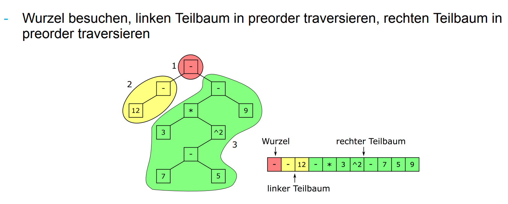

ChatGPT erklärt uns sinnhaft:
In der Informatik bezieht sich Rekursion auf die Fähigkeit einer Funktion oder eines Algorithmus, sich selbst wiederholt aufzurufen, um ein Problem zu lösen oder eine Aufgabe auszuführen.
Rekursion besteht typischerweise aus zwei Teilen:
Es ist wichtig, den Basisfall zu erreichen, um endlose Rekursionszyklen zu vermeiden und rekursive Funktionen oder Algorithmen effizient und korrekt zu implementieren.
Einige Beispiele:
Wir können auch die Pre- und Postorder Traversierung mit Rekursion durchführen
